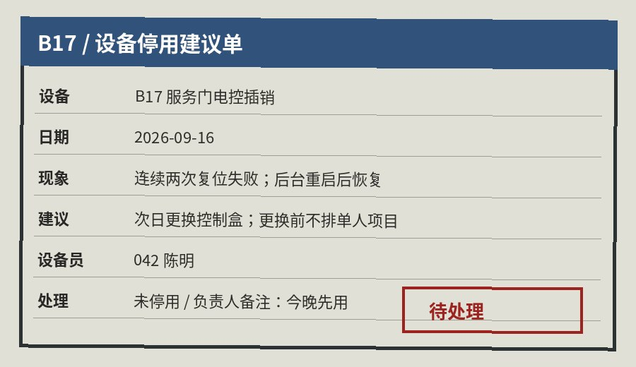

设备与维护附件
A01 现场说明草稿 / 未提交
03:36，现场领班手机备忘：02:41 有退出记录，后台重启没回位。陈明本来要走设备廊，我让他先帮着把 B 口最后几个人送出去，以为手开最多两三分钟。02:55 线路温度报警以后才意识到不只是门闩故障。120 打得太晚。
A03 设备组语音转写 / 02:44—02:53
02:44:19 陈明：
“B17 控制盒不回，后台重启两次都不行。我从设备廊过去，手开就行。”
02:45:02 赵志峰：
“B 口还有四个人。先把他们送出去，两分钟，别让人往设备廊走。”
02:49:18 陈明：
“里面一直在拍门，我先过去。你们谁把外面的人接一下？”
02:52:07 赵志峰：
“李诗把联系人页面开着。陈明先把 SM-3 断了，我过去看门。”
A04 临时线路温度记录
02:55:26B 区临时回路温度报警；点位靠近 SM-3 烟雾机、补光灯与临时插排。
02:56:04回路电流异常后掉线；服务侧随后报告插排与邻近线材有焦糊烟气。场内原本就有烟雾效果，最初没有立即区分。
A05 采购与维护

| 09/11 | B17 控制盒报价 1,860 元 | 未采购 |
|---|---|---|
| 09/16 | 设备组建议停用 B17 一晚 | 未执行 |
| 09/17 21:33 | 普通插排 2 个 / 补光与烟雾设备 | 无设备组签字 |